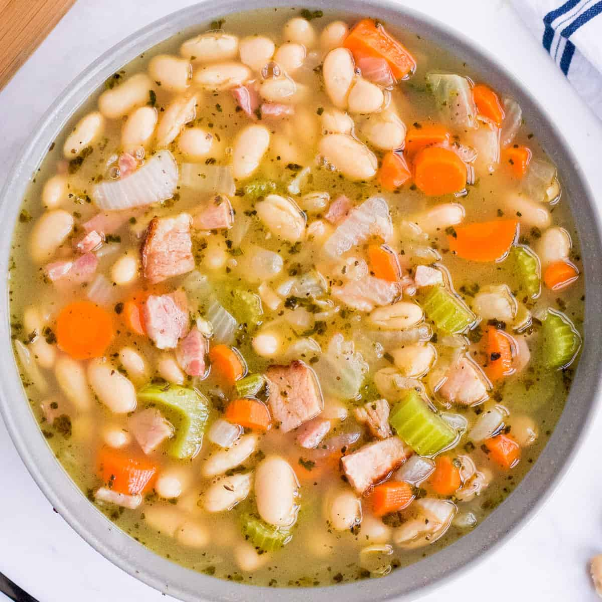

Hearty bean soup with ham

Description
This ultra hearty Ham and Bean Soup is perfect for using up that leftover holiday ham! After all the holiday cooking, you could use something soul-warming and comforting.
Ingredients (for 4 people, about 2500ml, 2.5 litres) of soup
- 1 Tbsp unsalted butter
- 1 Tbsp olive oil
- 1 ham bone check below for substitutions
- 2 carrots chopped
- 2 stalks celery chopped
- 1 medium yellow onion diced
- 3 cloves garlic minced
- 3 cans (15 oz each) cannellini beans rinsed and drained well
- 2 cups diced cooked ham from leftover spiral ham, or store-bought ham steaks
- 1 tsp dried Italian seasoning
- 1 tsp ground cumin
- 1 tsp dried thyme
- 1/2 tsp black pepper
- 1/2 tsp dried rosemary
- 1/4 tsp red pepper flakes (optional)
- 4 cups reduced sodium chicken broth
- 2 cups water
- 2 dried bay leaves (optional)
- salt to taste
Steps
- Heat butter and olive oil in a large dutch oven or stockpot over MED HIGH. Once hot, add the ham bone and brown on all sides, about 2 minutes per side. Set ham bone aside on a plate.
- Reduce heat to MED, and add carrots, celery, and onion. Cook about 5 minutes, stirring often, until softened.
- Add garlic and cook another minute.
- Add beans, diced ham, Italian seasoning, cumin, thyme, black pepper, rosemary, and red pepper flakes (if using). Pour in chicken broth, water, and add bay leaves (if using), then give everything a gentle stir.
- Return ham bone to the pot, nestling it in, along with any juices that have accumulated on the plate (those are full of flavor).
- Increase heat to MED HIGH and cover. Once soup has come to a high simmer or gentle boil, reduce heat to MED LOW and simmer for about 30 minutes. Stir occasionally, as the beans and ham can settle to the bottom and you don't want them to scorch.
- Remove ham bone and bay leaves (if used), and give the soup a taste. If needed, add a pinch of salt. Ham bones contain a lot of sodium, so I prefer to add the salt afterwards, if needed. Serve hot.